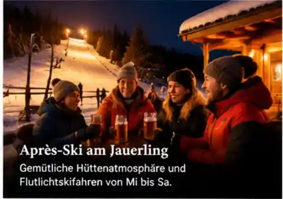
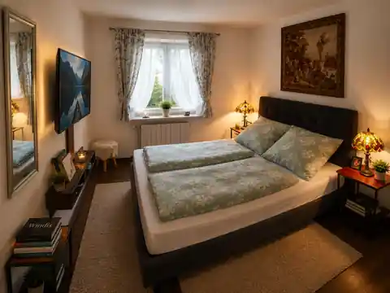

Flutlicht & Winterabend
Nach dem Skitag noch ein paar Schwünge im Flutlicht – danach zurück in die ruhige Wachau.
Winterimpression / Symbolbild. Aktuelle Betriebszeiten beim Betreiber prüfen.
Pistenspaß am Tag, Flutlicht am Abend – danach ruhig und warm im Gartenzimmer bei Zuhause am Bach in Aggsbach Markt.
Verfügbarkeit & Direktpreis prüfenWetterdaten werden geladen. Lift- und Pistenstatus bitte beim Betreiber prüfen.
Die Jauerling-Winterseite verbindet aktuelle Wetter- und Schneelage mit den offiziellen Informationen des Skigebiets und unserer Direktbuchung. So sehen Gäste sofort, ob sich der Skitag lohnt und ob unser Gartenzimmer noch verfügbar ist.
Nach dem Skitag noch ein paar Schwünge im Flutlicht – danach zurück in die ruhige Wachau.

Ein warmer Winterabend, etwas Genuss und anschließend ohne Hoteltrubel im Gartenzimmer entspannen.

Ruhiges Doppelzimmer für maximal zwei Gäste – genau das Zimmer, das bei uns buchbar ist.
Nach einem kalten Tag am Jauerling wartet ein warmes, ruhiges Gartenzimmer. Frühstück ist auf Vorbestellung möglich; WLAN und Parkplatz sind kostenlos.
Für Ski-Gäste besonders praktisch: nasse Kleidung und Ausrüstung müssen nicht im Zimmer trocknen.
Zimmer direkt prüfenFür Skischuhe, Jacken und nasse Winterausrüstung steht eine Trockenmöglichkeit zur Verfügung. Auf Wunsch wird der Raum beheizt.
Ski und Stöcke können getrennt vom Gästezimmer sicher aufbewahrt werden. Auch die Aufbewahrung kann auf Wunsch beheizt erfolgen.
Für Liftöffnung, Pistenstatus, Flutlicht und kurzfristige Änderungen gilt immer die aktuelle Betreiberinformation. Die oben angezeigte Temperatur und Schneedecke stammt aus einem aktuellen Wettermodell und ersetzt keine offizielle Pistenmeldung.
Offizielle Jauerling-Seite Lift & Skiarena BetriebszeitenDirekt prüfen und für den Jauerling-Skitag ein warmes Quartier in der Wachau sichern.
Verfügbarkeit & Direktpreis prüfen